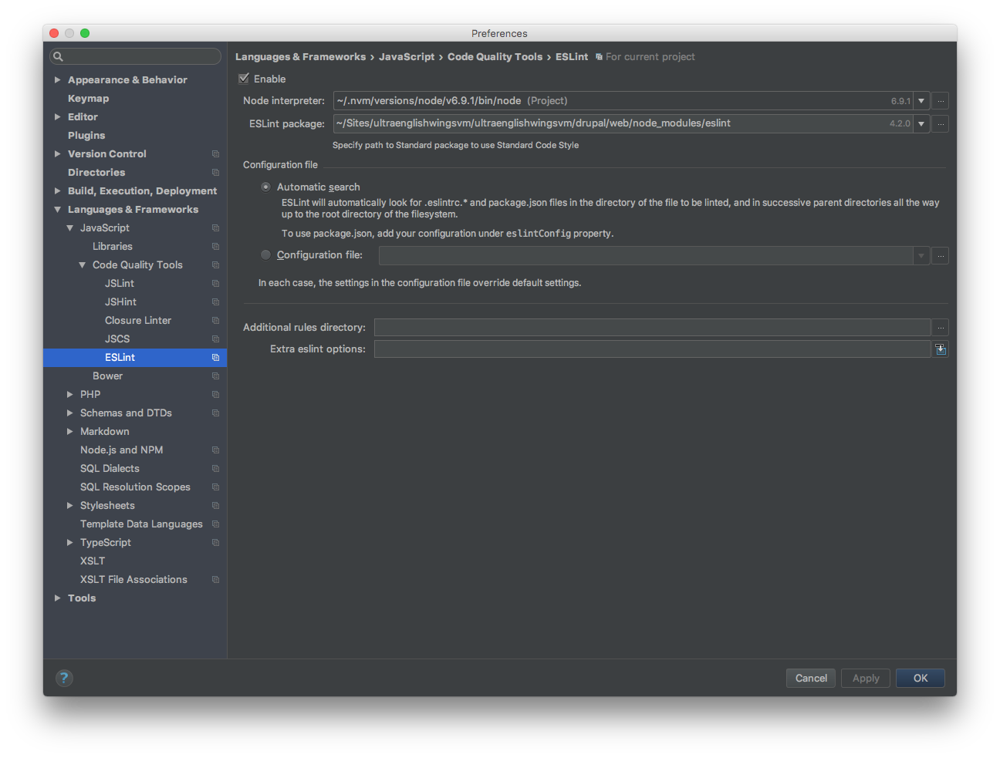
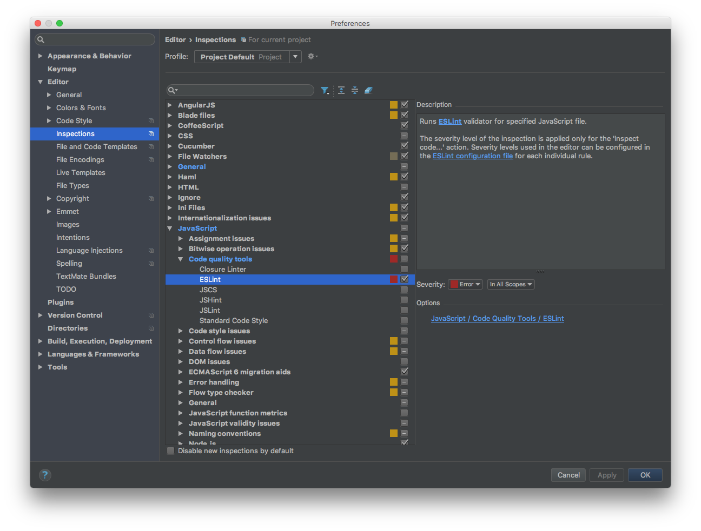
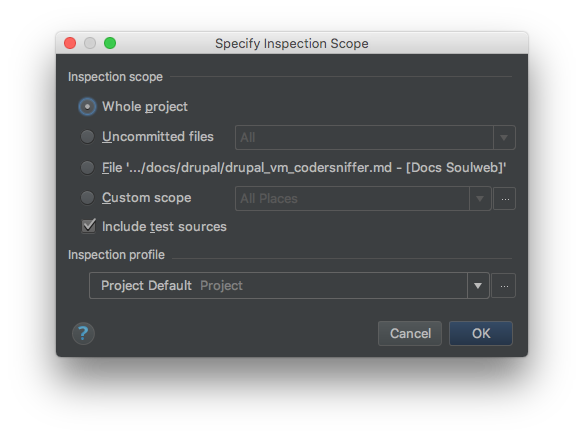

ESLint¶
ESLint is a tool to detect errors and potential problems in JavaScript code.
We use it to make sure our JavaScript code is consistent and free from syntax error and leaking variables and that it can be properly minified.
Requirements¶
1. Install Node.js using Nvm¶
Ensure your system has the appropriate C++ compiler:
- Open your terminal of choice
- Run
xcode-select --installas a command:- A popup will appear
- Select Install
- Allow the download to run to completion
To install nvm with the cURL method, run the following command in your terminal:
curl -o- https://raw.githubusercontent.com/creationix/nvm/v0.33.0/install.sh | bash
After running the above install script, nvm should have successfully installed. To ensure that nvm is up and running on your machine, you can test it with the following command:
nvm --version
If you are missing the nvm command, after running the install script, you may be missing a .bash_profile.
Run touch ~/.bash_profile in your command line and re-run the installer script.
If the problem persists after that, you can open the existing .bash_profile file (using your favorite text editor) and add the following line to it:
export NVM_DIR="~/.nvm" [ -s "$NVM_DIR/nvm.sh" ] && \. "$NVM_DIR/nvm.sh" # This loads nvm
Now you can use nvm to install node.js. To install the latest available version of node.js, you can use the following command:
nvm install node
Next, to use that version of node.js in any new shell, you can simply run the use command:
nvm use node
Nvm is great and makes switching between node versions easy and convenient. However, there's one caveat. If you type:
which node
you will see something interesting. Nvm installs node.js inside your user's home directory. It's best to install one copy of node globally so that other users can access it, and use nvm to switch between your development versions.
To do this, run the following command (entering your user's password at the prompt):
n=$(which node);n=${n%/bin/node}; chmod -R 755 $n/bin/*; sudo cp -r $n/{bin,lib,share} /usr/local
The above command is a bit complicated, but all it's doing is copying whatever version of node you have active via nvm into the /usr/local/ directory (where user installed global files should live on a linux VPS) and setting the permissions so that all users can access them.
Change node.js version
If you ever want to change the version of node that's installed system wide, just do another nvm use vXX.XX.XX to switch your user's node to the version you want, and then re-run the above command to copy it to the system directory.
Install and configure ESLint¶
1. Install ESLint¶
We are gonna install ESLint as part of our project build locally:
Open your terminal of choice and move to local drupal/web direcory of your project and create a package.json running:
npm init
Install ESLint:
npm install eslint --save-dev
Make sure the ESLint is executable:
chmod +x ./node_modules/.bin/eslint
You should then setup a configuration file. Drupal is already shiped with the default configuration file .eslintrc.json.
If you don't find it in your drupal/web folder create it with the following content:
{
"extends": "eslint-config-airbnb",
"root": true,
"env": {
"browser": true,
"es6": true,
"node": true
},
"globals": {
"Drupal": true,
"drupalSettings": true,
"drupalTranslations": true,
"domready": true,
"jQuery": true,
"_": true,
"matchMedia": true,
"Backbone": true,
"Modernizr": true,
"CKEDITOR": true
},
"rules": {
"consistent-return": [0],
"no-underscore-dangle": [0],
"max-nested-callbacks": [1, 3],
"no-mutable-exports": [1],
"no-plusplus": [1, {
"allowForLoopAfterthoughts": true
}],
"no-param-reassign": [0],
"no-prototype-builtins": [0],
"valid-jsdoc": [1, {
"prefer": {
"returns": "return",
"property": "prop"
},
"requireReturn": false
}],
"brace-style": ["error", "stroustrup"],
"no-unused-vars": [1]
}
}
To ensure that ESLint is working on your machine, you can test it with the following command:
./node_modules/.bin/eslint --version
2. Git ignore ESLint package files¶
Edit the main .gitignore file to add the ESLint package files.
The files/folders to ignore are:
- Folder
/web/node_modules/ - File
/web/package.json
3. Integrate ESLint in PhpStorm¶
Open your settings and go to Language & Frameworks > JavaScript > Code Quality Tools > ESLint.

- check
Enable Node interpretershould be pre populated, if not choose yours- populate
ESLint packagewith{yourlocalprojectdirectory}/drupal/web/node_modules/eslint IDEshould automatically find your configuration file, but you can specify path to it- all other options you can left empty
Now head to Editor > Inspections > JavaScript > Code quality tools > ESLint and enable it.

Inspect Code¶
To inspect your code select, from the menu, Code -> Inspect Code. On the shown window select what you wanna inspect and click OK.
